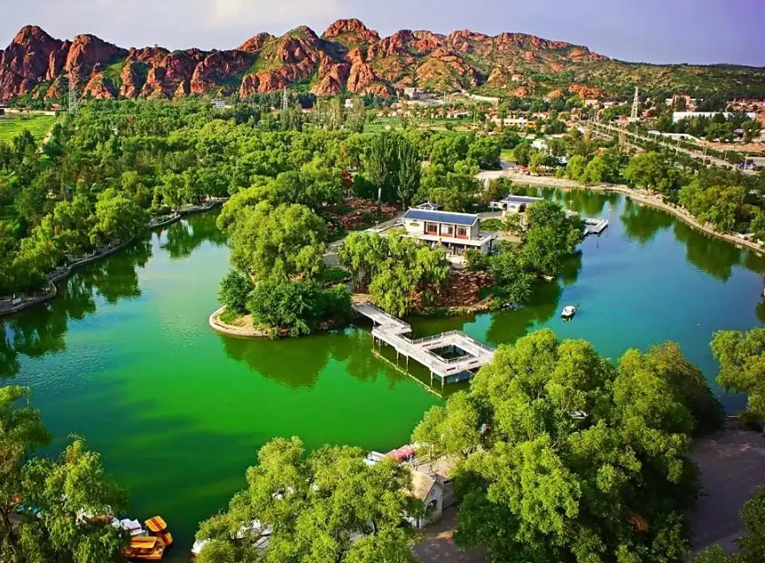
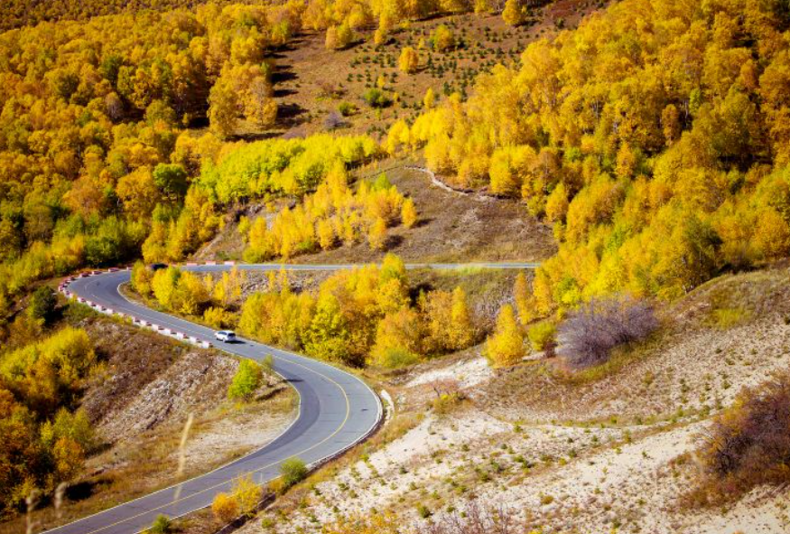

赤峰文旅

赤峰市，简称"赤"，原称"昭乌达盟"，是中华人民共和国内蒙古自治区下辖地级市、II型大城市。位于内蒙古东南部，蒙冀辽三省区交汇处，地处东北、华北地区结合部，总面积90021平方千米。截至2024年末，赤峰市常住人口393.1万。
赤峰名为红山之意，因城区东北部赭红色山峰而得名，蒙古语称"乌兰哈达"。因红山文化"国宝"碧玉龙的发现，赤峰又被称为"玉龙之乡"。赤峰地区曾是辽代政治、经济文化的中心，辽上京和辽中京分别坐落在巴林左旗和宁城县境内。赤峰是国家卫生城市、全国民族团结进步示范市、国家园林城市、中国优秀旅游城市，被誉为"中国有色金属之乡"。


赤峰先民率先进行新石器革命，迎来人类文明曙光。兴隆洼文化时代开始农耕渔猎定居生活，留下"华夏第一村"聚落遗址。
红山文化时代，赤峰成为中华古代文明诞生地。翁牛特旗三星他拉出土的大型碧玉雕龙，是中华大地最早的龙形器物，被誉为"天下第一龙"。
赤峰全境属上京临潢府和中京大定府。上京是辽王朝首都，中京是最大陪都，赤峰成为辽代政治、经济、文化中心。
今赤峰市大部属昭乌达盟，部分属卓索图盟。"昭乌达"为蒙语，意为"百柳"，因草原上百柳丛生而得名。
经国务院批准，撤销昭乌达盟行政公署建制，建立赤峰市，实行市管县体制，辖3区7旗2县至今。
赤峰地处内蒙古高原、冀北丘陵和辽宁平原的截接复合部位，呈三面环山、西高东低、多山多丘陵的地貌特征。结构为"七山一水二分田"，海拔300—2000米。北部为大兴安岭南段山地，西部为七老图山，东南部为努鲁儿虎山。最高峰为大光顶子山（2067米），最低处为东部大兴三角地区（不足300米）。
赤峰属温带半干旱大陆性季风气候，四季分明：冬季漫长寒冷雪少风多，春季升温快干旱多风，夏季短促雨量集中，秋季气温下降快霜冻来临早。年平均气温0—7℃，年降水量381毫米，日照时数2800—3100小时。境内四大流域、八大水系，大小湖泊128个，最大湖泊为达里诺尔湖。


赤峰市辖3个区、7个旗、2个县，市人民政府驻松山区玉龙大街1号。
2025年，赤峰市地区生产总值2407.1亿元，增长4.9%。已形成以能源、冶金、食品、医药、纺织、建材化工、机械等行业为支柱的门类齐全的工业体系。赤峰高新区工业总产值超1180亿元，是蒙东地区首个突破千亿的园区。2010年被命名为"中国有色金属之乡"，是全国唯一获此殊荣的地级城市。已发现矿产资源83种、矿产地1600多处，金、银、铜、铅、锌等储量丰富。
赤峰是首都经济圈和环渤海经济圈重要节点城市，商贸服务型国家物流枢纽承载城市，国家重要能源和战略资源供给保障基地。2019年获批国家级跨境电子商务综合试验区，中欧班列"赤峰号"已实现常态化运行，2024年正式开通至天津港铁海联运进出口新通道。
距今五六千年的红山文化是中华文明重要源头。出土的C形碧玉龙被誉为"中华第一龙"，将华夏龙崇拜追溯至新石器时代。
赤峰是辽代政治经济文化中心，辽上京（巴林左旗）为辽代首都，辽中京（宁城县）为最大陪都，留下大量珍贵历史遗迹。
赤峰是蒙古族重要聚居地，那达慕大会、马头琴、蒙古包、祭敖包、蒙古族服饰等多项非遗项目在此传承发扬。
巴林石产于巴林右旗，与寿山石、青田石、昌化石并称中国四大国石，是赤峰最具代表性的矿产资源与文化符号。
赤峰是中国优秀旅游城市，自然与人文景观交相辉映。有世界地质公园阿斯哈图石林、距北京最近的大草原乌兰布统、候鸟天堂达里诺尔湖、沙水相连的玉龙沙湖，还有红山文化遗址、辽上京遗址等国家级重点文保单位。全市各级各类自然保护区28个，其中国家级8个。


赤峰区位优越、交通便捷，是内蒙古距离出海口最近的城市。距北京、沈阳约400公里，距锦州、秦皇岛不足300公里。赤峰玉龙机场已开通至北京、上海、呼和浩特等主要城市航线，另有阿鲁科尔沁机场、巴林右旗大板机场等多个通用机场。铁路方面，赤峰站是京通铁路重要枢纽，高铁至北京约2.5小时。公路方面，大广高速（G45）、丹锡高速（G16）贯穿全境。中欧班列"赤峰号"和铁海联运通道为赤峰打开了连接世界的大门。